<article class="docs-article">
    <section class="docs-section" id="taskvariables">
        <div>
            <h1>Multi-Form Bundle feature</h1>
            <hr>
            <p>
                Form bundling introduces the capability to create and combine multiple forms into a bundled application package. This
                feature is particularly useful in scenarios where there is a need to consolidate various forms and streamline their
                submission process.
            </p>
             <p>
                By utilizing this feature, you can generate different forms with unique form schemas, each serving a specific purpose.
                These forms can then be combined into a bundled application package. This package acts as a unified interface that
                allows users to interact with and submit multiple forms seamlessly. The bundle can be associated with a workflow which
                can handle next steps post-submission of the package.
             </p>
             <p>
                To enhance the functionality, a powerful rule engine is integrated into the bundle. This rule engine provides
                flexibility to designers, enabling them to configure rules that dictate the visibility of forms based on the data
                submitted within the forms themselves. This means that the visibility of certain forms can be dynamically controlled
                based on the information provided by the user. For example, if a user selects a specific option in one form, it can
                trigger the display or hiding of other related forms within the bundled package.
             </p>
             <p>
                The flexibility of this feature becomes especially valuable when dealing with complex scenarios. For instance, imagine a
                situation where you have a general form that needs to include multiple specialized forms, each catering to different
                types of requests. With this feature, you can consolidate all these forms into a single bundled application package. As
                a result, users can fill out and submit all the necessary forms in a seamless and efficient manner.
             </p>
             <p>
                By leveraging the bundled application package, the complexity associated with managing and submitting different forms is
                significantly reduced. Instead of navigating through separate interfaces for each form, users can access and interact
                with all the required forms in a unified manner. This streamlined approach simplifies the process for both the users and
                designers, resulting in a more efficient and user-friendly application experience.
             </p>

            <h3>Steps to create bundle</h3>
            <ol>
                <li>.Create forms and enable the bundle option so you can add them to a bundle. The individual forms need not be published
                to be part of the bundle
                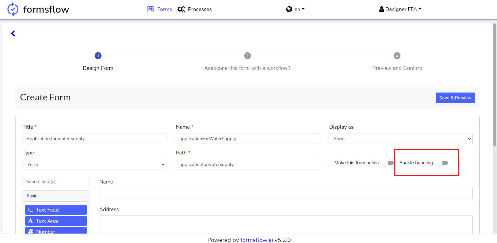
            </li>
            <li>
                Select the Create Bundle option under Forms– Form Bundle
                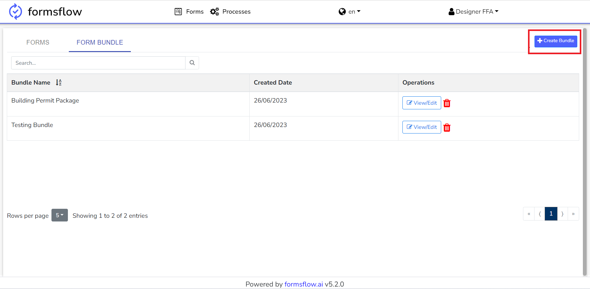
            </li>
            <li>
                Name the bundle and add a description , then select the forms and add them to the bundle
                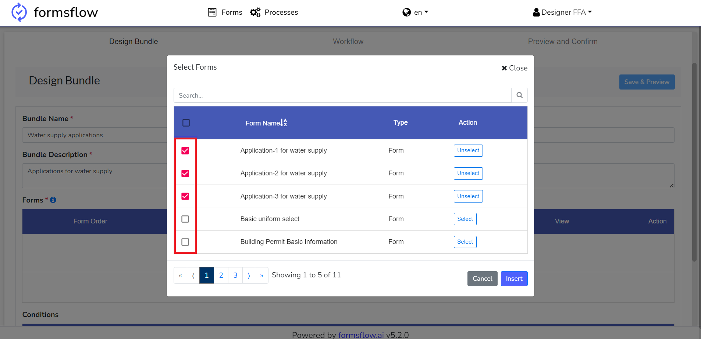
            </li>
            <li>
                The order of the forms in the bundle can be changed by dragging this 
                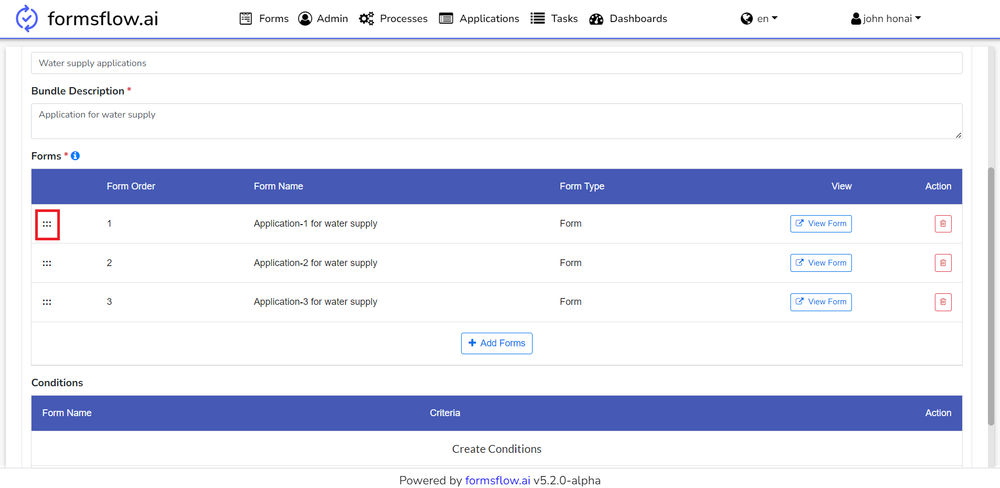
            </li>
            <li>
                Add conditions to control the display of the forms in the Bundle. Add the criteria and select the form to which the
                criteria should apply
                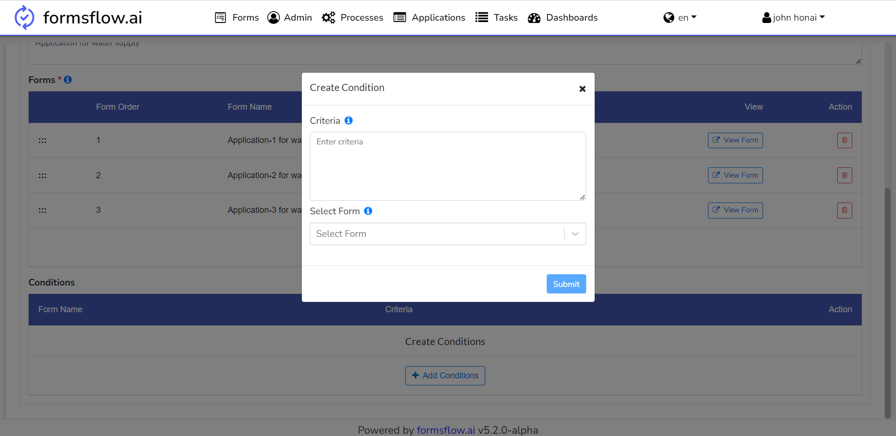
            </li>
            <li>
                Save the Bundle
                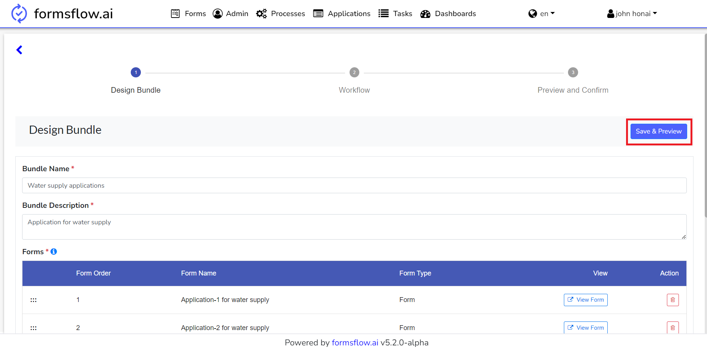
            </li>
            <li>
                Attach the workflow to the bundle and publish 
                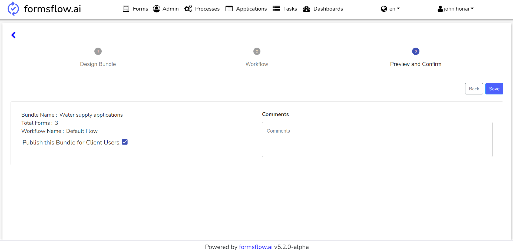
            </li>
            </ol>
    </section>
    <section class="docs-section" id="taskvariables">
        <div>
            <h4 id="camunda-bpm-tenant-based-task-assignment">Here are a few things to keep in mind when designing forms</h4>
            <hr>
            <ul>
                <li>
                    If a form is included in a bundle, the Reviewer/Approver action button logic should not directly update to formio.
                    Instead emit “customEvent”.
                </li>
                <pre>
                    <code>
                        form.emit('customEvent', {
                             type: "actionComplete",
                             component: component,
                             actionType:data.managerActionType
                        });
                    </code>
                </pre>
                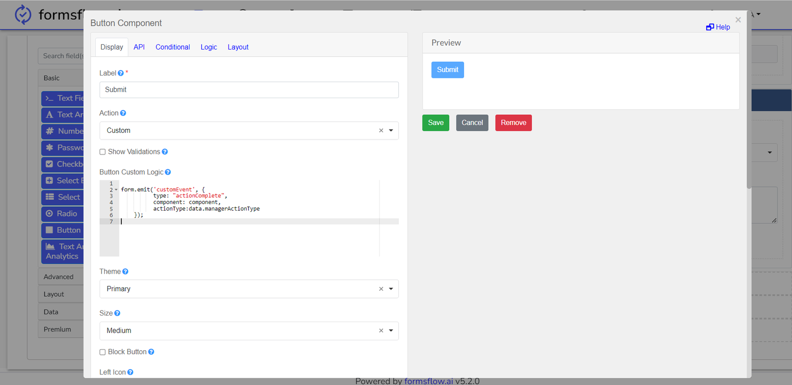
                <br>
                <li>
                    But in the case of the form used in the form connector, it can directly update formio.
                </li>
                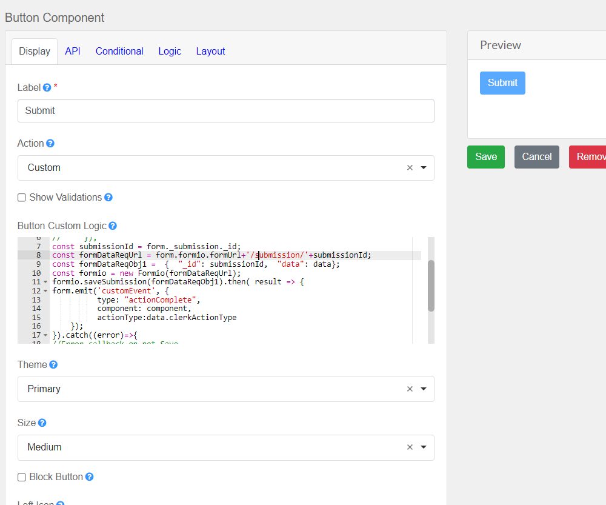
            </ul>
        </div>
    </section>
    <section class="docs-section" id="taskvariables">
        <div>
            <h3>How to Use CombineSubmissionBundleListener</h3>
        
            <ol>
                <li>
                    Configure <a target="_blank"
                        href="https://github.com/AOT-Technologies/forms-flow-ai-ee/blob/feature/form-bundling/forms-flow-bpm/starter-examples/listeners/formconnector-readme.md">FormConnectorListener</a>FormConnectorListener
                    to a task. This listener set bundleUrl as the execution variable.
                    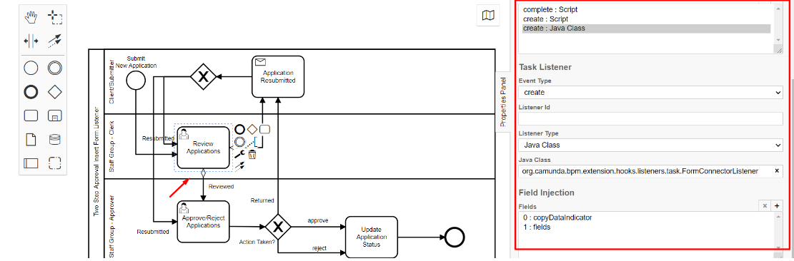
                </li>
                <li>
                    Configure the CombineSubmissionBundleListener that merges the data from bundleUrl and formUrl to generate a
                    new
                    submission for the associated bundle. The URL of the newly created submission is then assigned to formUrl.
                    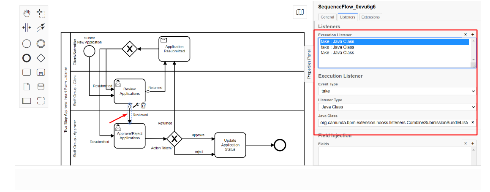
                </li>
            </ol>
        </div>
    </section>

        <script>hljs.initHighlighting();</script>